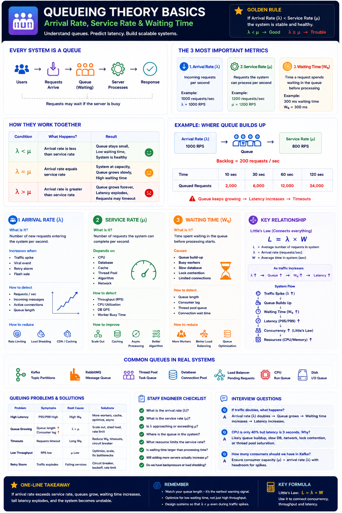

Arrival Rate (λ) • Service Rate (μ) • Waiting Time (Wq)
Core Idea
Queueing Theory helps predict how requests wait, how resources become saturated, and when latency suddenly explodes. Every distributed system is a queue.
Interviewers never say "Explain Queueing Theory." They ask: Why is latency increasing? Why didn't autoscaling help? Why are requests timing out? How many consumers do we need? — All queueing questions.
Golden Rule
λ < μ
Queue stays small. System healthy.
λ = μ
At capacity. Queue grows slowly. High waiting time.
λ > μ
Queue grows forever. Latency explodes. Timeouts.
The 3 Most Important Metrics
Arrival Rate (λ)
Incoming requests per second.
Goal: Stable
1000 RPS → λ = 1000
Service Rate (μ)
Requests the system can complete per second.
Goal: Higher than λ
1200 RPS → μ = 1200
Waiting Time (Wq)
Time spent waiting in queue before processing starts.
Goal: Minimize
300ms waiting + 20ms work = 320ms total
Arrival Rate (λ)
Increases When
Detect
Reduce
Service Rate (μ)
Depends On
Improve
Waiting Time (Wq)
Causes
Detect
Reduce
Queue Buildup Example
| Time | Queued Requests |
|---|---|
| 10 sec | 2,000 |
| 30 sec | 6,000 |
| 60 sec | 12,000 |
| 120 sec | 24,000 |
Queue grows → Latency increases → Timeouts
Queues in Real Systems
| System | Queue |
|---|---|
| Kafka | Topic Partitions |
| RabbitMQ | Message Queue |
| Thread Pool | Task Queue |
| Database | Connection Wait Queue |
| Load Balancer | Pending Requests |
| CPU | Run Queue |
| Disk | IO Queue |
Common Production Problems
| Problem | Root Cause |
|---|---|
| High Latency | Waiting Time (Wq) high |
| Consumer Lag | λ > μ |
| Thread Starvation | Queue growth |
| Timeouts | Long waiting time |
| Retry Storm | Arrival rate explosion |
| Cascading Failure | Queue saturation |
How Staff Engineers Fix It
| Problem | Solution |
|---|---|
| Arrival Rate ↑ | Rate Limiter, CDN, Cache |
| Service Rate ↓ | Scale out, Async, Better algorithm |
| Waiting Time ↑ | More workers, Backpressure, Queue optimisation |
| Queue Explosion | Load shedding, Circuit breaker |
Interview Q&A
Q1: Traffic doubled — what happens?
Q2: CPU is only 40% but latency is 3 seconds — why?
Possible causes: Queue buildup, slow DB, lock contention, thread pool saturation, network wait. CPU is not always the bottleneck — check waiting time (Wq) first.
Q3: How many Kafka consumers do we need?
Ensure consumer capacity (μ) > arrival rate (λ), with headroom for spikes. Consumer count = partitions, so also ensure enough partitions.
Relationship with Little's Law
Queueing Theory explains why latency increases. Little's Law explains how that latency increase drives concurrency explosion.
Staff Engineer Checklist — Before Scaling
✓ What is the current arrival rate (λ)?
✓ What is the service rate (μ)?
✓ Is λ approaching or exceeding μ?
✓ Where is the queue in the system?
✓ What resource limits μ?
✓ Is waiting time or processing time dominating latency?
✓ Will adding more servers actually increase μ?
✓ Do we have backpressure or load shedding in place?
Interview Cheat Sheet
Principal Engineer Takeaway
Arrival rate tells you how demand is changing
Service rate tells you processing capacity
Waiting time reveals approaching saturation
Queue length is the earliest warning signal
If arrival rate exceeds service rate, queues grow, waiting time increases, tail latency explodes, and the system eventually becomes unstable. Watch your queue length — it tells you the truth before CPU or memory do.
